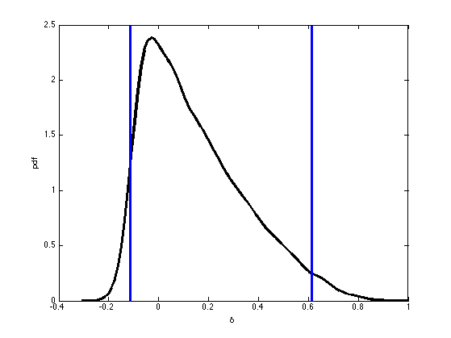
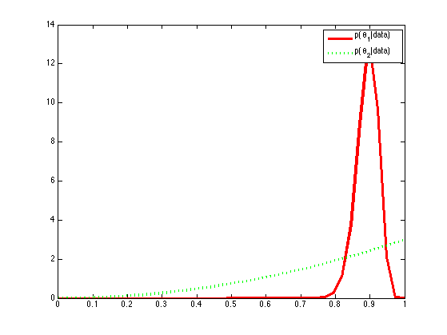

Contents
Analysis of binomial differences
PMTKneedsStatsToolbox ksdensity
% Based on http://www.johndcook.com/blog/2011/09/27/bayesian-amazon/ % See also unpairedTestHandednessDemo % This file is from pmtk3.googlecode.com clear all requireStatsToolbox setSeed(0); y1 = 90; n1 = 100; y2 = 2; n2 = 2; [deltas, post, thetas] = contingencyTableUnpairedDiffPostMc(n1,y1,n2,y2); figure; plot(deltas, post, 'linewidth', 3, 'color', 'k'); xlabel('\delta'); ylabel('pdf') diff = thetas(:,1)-thetas(:,2); q = quantilePMTK(diff, [0.025 0.5 0.975]); hold on verticalLine(q(1), 'linewidth', 3); verticalLine(q(3), 'linewidth', 3); printPmtkFigure('unpairedTestHandednessDemo')
pgreaterMC = mean(thetas(:,1)>thetas(:,2));
numerical integration
pgreaterExact = dblquad(@(t1,t2) betaProb(t1, y1+1, n1-y1+1) .* ... betaProb(t2, y2+1, n2-y2+1) .* (t1 > t2), ... 0, 1, 0, 1); fprintf('prob(theta1 > theta2 | data): MC= %5.3f, exact=%5.3f\n', ... pgreaterMC, pgreaterExact); printPmtkFigure('amazonSellersDelta') figure; xs = linspace(0.001, 0.999, 40); ps1 = exp(betaLogprob(1+y1, 1+n1-y1, xs)); ps2 = exp(betaLogprob(1+y2, 1+n2-y2, xs)); plot(xs, ps1, 'r-', 'linewidth', 3); hold on plot(xs, ps2, 'g:', 'linewidth', 3); legend('p(\theta_1|data)', 'p(\theta_2|data)') printPmtkFigure('amazonSellersTheta')
prob(theta1 > theta2 | data): MC= 0.718, exact=0.710